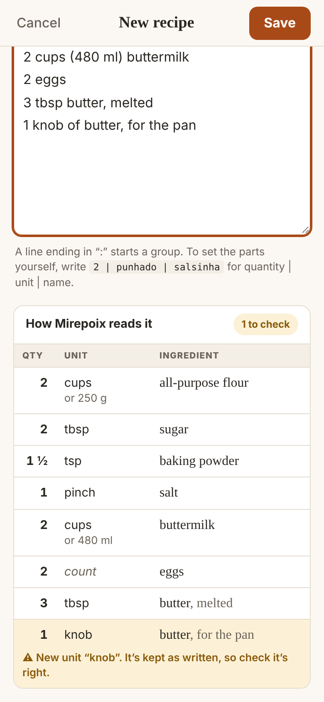
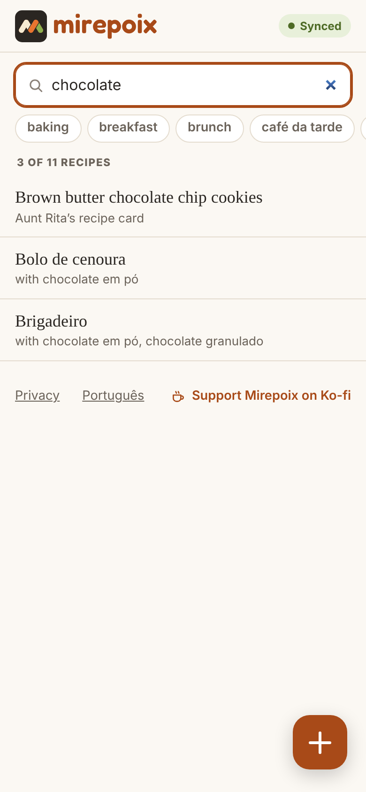
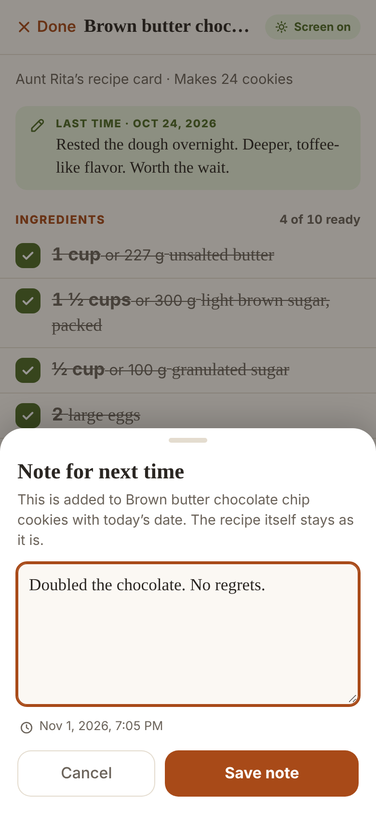
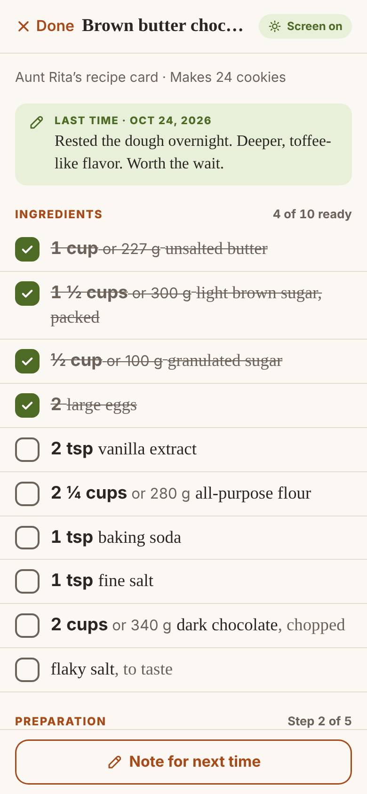
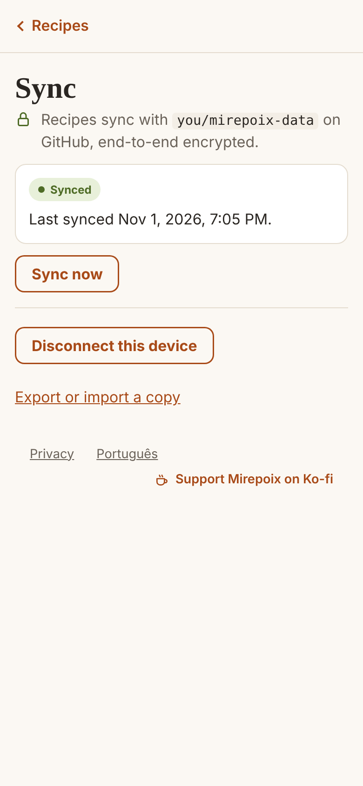
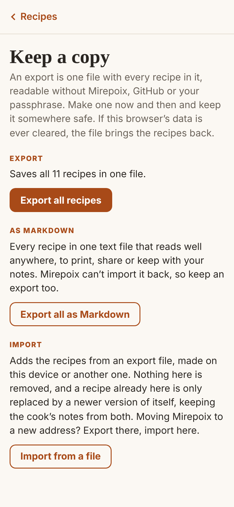

A private recipe box
From the page
to the pan.
Recipes from books, sites and notebooks, kept in one quiet place on every device you cook with.
Paste or type a recipe and Mirepoix reads every ingredient as quantity, unit and name. Read it without changing a thing by accident, cook with the screen on, and leave notes for next time.
- Free
- In any modern browser
- One tap from your home screen
- On every device even offline
- Private by default
- English and Português
Capture
Paste it in,
Mirepoix reads it.
Copy a recipe from a website, type it from a book, or bring it over a chunk at a time. Every ingredient line becomes quantity, unit and name as you go, and you see how it was read before you save.

-
Two languages in one box.
Each recipe is read in English or Portuguese, so “2 cups flour” and “2 xícaras de farinha” sit side by side.
-
Equivalents made clear.
“2 cups (437 g) butter” is one amount written two ways, shown as “or 437 g”. Bring out the scale, or don’t.
-
No guessing.
A unit Mirepoix doesn’t know is kept as you wrote it and marked for you to check. You can always set the parts yourself.
Find and read
Find it fast,
Read it calmly.
All your recipes in one list that searches titles, ingredients and tags. Open one and just read: nothing changes unless you mean it to.
The whole box at a glance
Every recipe with where it came from, and your tags right under the search.

What can I make with…?
Search for an ingredient and see every recipe that uses it, in either language.
Reading never edits
No inline editing and no autosave. Changing a recipe is its own screen, with Save and Cancel.
Real app screens. Sample recipes.
On your home screen
One tap away,
Even offline.
Mirepoix is made to live on your home screen. Add it once, and it opens like any app: straight into your recipes, full screen, with or without a connection.
- iPhone and iPad In Safari, tap Share, then Add to Home Screen.
- Android In Chrome, open the menu, then Install app or Add to Home screen.
- Computers In Chrome or Edge, use the install button in the address bar. In Safari on a Mac, choose File, then Add to Dock.
- No app store and nothing to download
- New versions arrive on their own


Cook
Hands busy,
Screen on.
Start cooking and the recipe gets bigger, the screen stays awake, and you tick things off as you go.
- Tick as you go Ingredients and steps check off with a tap, and the step you’re on stays in view. Ticks are for this cook only and never saved.
- The screen stays awake No more tapping the screen with a floury knuckle. Where the device allows it, the screen stays on until you’re done.
- A note for future you Notes are dated and kept beside the recipe, never written into it, and they greet you as “Last time” when you come back.
Every device
One recipe box,
Multiple devices.
Phone in the kitchen, laptop at the desk, tablet at your mother’s. Connect them once, and the same recipes are on all of them.
- Encrypted before it leaves Recipes are locked on your device with AES-256 and a passphrase only you know. GitHub stores scrambled files; even the titles stay private.
- Yours, not ours Recipes travel through a private GitHub repository that belongs to you. No Mirepoix server, no subscription, and every change is kept in its history.
- Nothing gets lost Edited the same recipe on two devices? Both versions are kept, side by side. Cook’s notes from everywhere simply add up.
Syncing is optional. Setting it up takes a few minutes, once, and Mirepoix walks you through it.
- Your devices
- Encrypted here
- Your private repository


Yours to keep
Your recipes,
Your copy.
Make one file with every recipe in it, whenever you like. It opens without Mirepoix, GitHub or your passphrase.
Keep it in your cloud drive or your email. Import it on any device to bring everything back, cook’s notes included.
- JSON Readable anywhere
- Offline No connection needed
- No ads Not now, not later
Better with every release
Small steps,
incrementally better.
Mirepoix grows a release at a time, and each one works on its own. Here’s where it is, and where it’s going.
-
Here
Recipe box
Paste or type, read, search, export and import. In English and Portuguese.
-
Here
Every device
The same recipes everywhere, end-to-end encrypted through your own repository.
-
Here
Cook mode
Big type, the screen on, ticks, notes for next time, and tags.
-
Next
Smart paste
Paste a whole recipe in one go, and Mirepoix finds the sections.
-
Later
Your measures
More ways to write equivalents, and units of your own, like “copo americano”.
Around the table
Fair questions.
Straight answers.
What people ask before they paste their first recipe.
-
Is Mirepoix free?
Yes. There’s no account, no ads and no subscription. If you’d like to help it grow, you can support Mirepoix on Ko-fi.
-
Do I need to install anything?
No. Mirepoix runs in any modern browser, on phones, tablets and computers. To keep it one tap away, add it to your home screen: on iPhone and iPad, tap Share, then Add to Home Screen; in Chrome or Edge, use the install button in the address bar. It then opens like an app, and works offline.
-
Where are my recipes kept?
On your device, in your browser’s storage. If you turn on syncing, an encrypted copy also goes to a private GitHub repository of yours. The web server Mirepoix comes from never sees them.
-
Do I need a GitHub account?
Only to sync between devices. On a single device, Mirepoix needs nothing else at all. Setting up sync takes a few minutes, once: a private repository, and a token for each device. The app explains every step.
-
Can my family share one recipe box?
Yes. Everyone who connects to the same repository, with the same passphrase, shares the same recipes, and the recipes each person already had are merged in. Each device gets its own token, so a lost phone can be cut off on its own.
-
What if I forget my passphrase?
Nobody can recover it, and that’s the point: nobody else has it. Devices that are already connected keep working, and an export makes a readable copy of every recipe at any time.
-
Which languages does it speak?
Its screens are in English and Brazilian Portuguese. Each recipe has its own language for reading ingredients, so “2 cups flour” and “2 xícaras de farinha” both work, in the same box.
Free, in your browser
Your first recipe
is one paste away.
Nothing to install, nothing to sign up for. Open Mirepoix and paste.